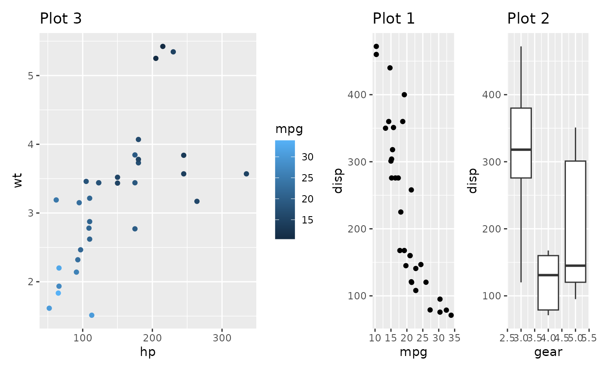
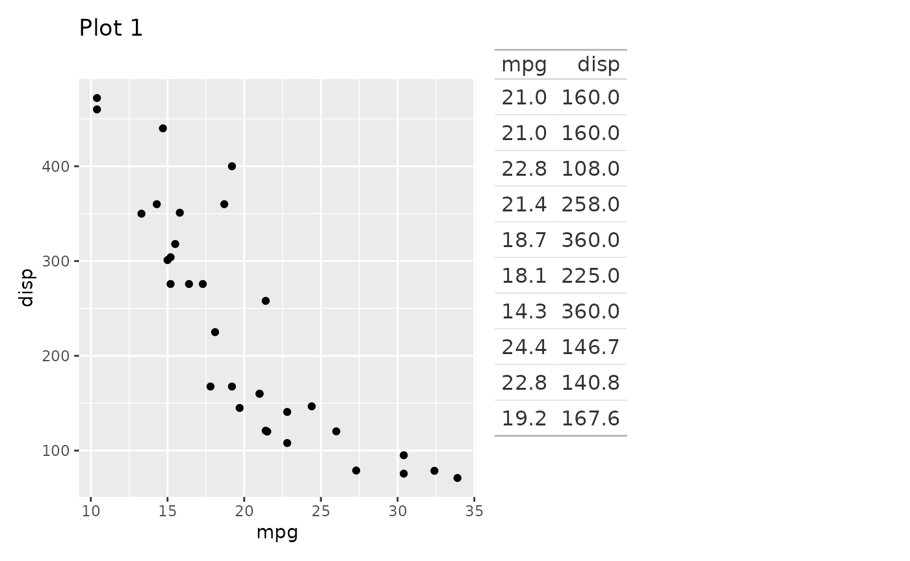
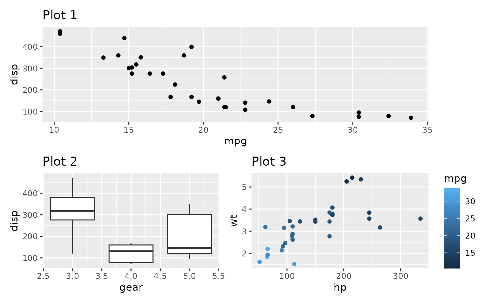
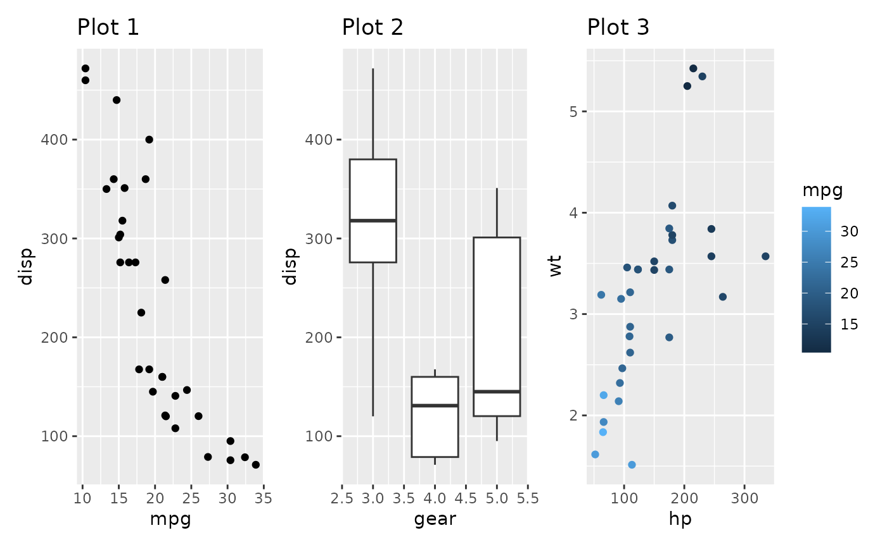
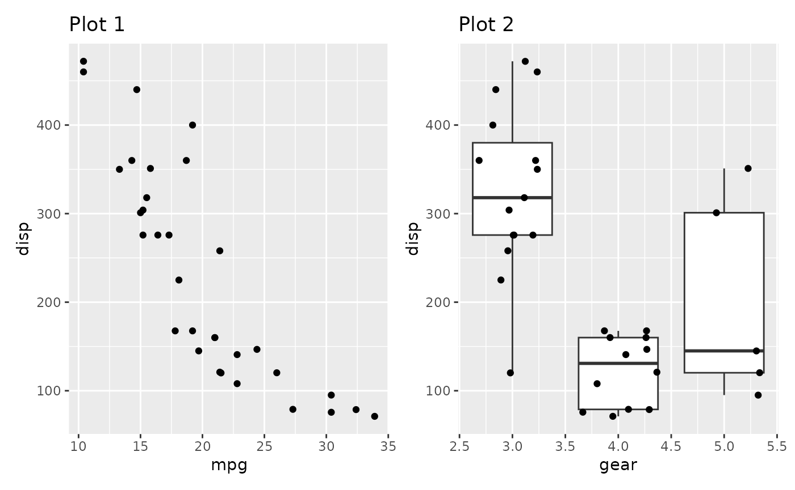

library(patchwork)
Before plots can be laid out, they have to be assembled. Arguably one of patchwork’s biggest selling point is that it expands on the use of + in ggplot2 to allow plots to be added together and composed, creating a natural extension of the ggplot2 API. There is more to it than that though, and this tutorial will teach you all about the different operators and functions available for plot assembly.
As always, we’ll start with a few well-known example plots:
library(ggplot2) p1 <- ggplot(mtcars) + geom_point(aes(mpg, disp)) + ggtitle('Plot 1') p2 <- ggplot(mtcars) + geom_boxplot(aes(gear, disp, group = gear)) + ggtitle('Plot 2') p3 <- ggplot(mtcars) + geom_point(aes(hp, wt, colour = mpg)) + ggtitle('Plot 3') p4 <- ggplot(mtcars) + geom_bar(aes(gear)) + facet_wrap(~cyl) + ggtitle('Plot 4')
Adding plots to the patchwork
At this point, it shouldn’t come as a surprise that you can use + to add plots together to form a patchwork. If it does, I’d suggest you start out with the Getting Started guide, and come back once you’ve gone through that. But, just to recap: you can add plots together, like so:
p1 + p2

using this approach, it is possible to assemble a number of plots, but that is not the only thing that can be added. Other patchworks can be added, and will create a new nested patchwork:
patch <- p1 + p2 p3 + patch

Adding non-ggplot content
Sometimes you need to have other content than ggplot2 in your patchwork. Standard grid grobs can be added to your plot as well:
p1 + grid::textGrob('Some really important text')

Other packages provide even more complex grobs to add, e.g. tableGrob from gridExtra:

Now and then, it is necessary to work with plots from the graphics package (base graphics). These can be added to patchwork by providing them as a one-sided formula:
p1 + ~plot(mtcars$mpg, mtcars$disp, main = 'Plot 2')

Notice that the standard alignment you’d expect when adding ggplots together no longer works. In general, there is no way to get consistent alignment between ggplots and base graphics, but experiment with the different par() settings until you get something that works for your particular use-case. The ggplotify package provides even more functionality for converting different graphics to grobs so if the standard formula interface in patchwork doesn’t work for you, do check that out.
The workhorse underneath the ability to add non-ggplot objects to a patchwork is wrap_elements() which is called implicitly when adding non-ggplot objects. To get a bit more control over how your object is added, wrap the object directly in wrap_elements(). Here you can define if the object should be aligned to the full area, or to the plot area. Combining that with setting margins to zero and not clipping the grob, you can almost get a perfect alignment:
old_par <- par(mar = c(0, 2, 0, 0), bg = NA) p1 + wrap_elements(panel = ~plot(mtcars$mpg, mtcars$disp), clip = FALSE) par(old_par)

An interesting side effect of this setup is that it is possible to add labels and styling to a wrapped element (though most theme settings will be ignored). All in all you can come pretty close to an aligned base plot, but this will always be a bit fiddly and ad hoc. In general it is simply recommended to use ggplot2 if at all possible.
old_par <- par(mar = c(0, 0, 0, 0), mgp = c(1, 0.25, 0), bg = NA, cex.axis = 0.75, las = 1, tcl = -0.25) p1 + wrap_elements(panel = ~plot(mtcars$mpg, mtcars$disp), clip = FALSE) + ggtitle('Plot 2') + theme(plot.margin = margin(5.5, 5.5, 5.5, 35)) par(old_par)

Another use case for wrap_elements() is when you need the first plot to not be a ggplot. Patchwork is not able to change the + behavior for miscellaneous objects, and so, if they appear as the first element they must be wrapped in an object patchwork understands:
# This won't do anything grid::textGrob('Text on left side') + p1 #> NULL
# This will work wrap_elements(grid::textGrob('Text on left side')) + p1

Stacking and packing
The + operator simply combines plots without telling patchwork anything about the desired layout. The layout, unless changed with plot_layout() (See the Controlling Layout guide), will simply be a grid with enough rows and columns to contain the number of plots, while being as square as possible. For the special case of putting plots besides each other or on top of each other patchwork provides 2 shortcut operators. | will place plots next to each other while / will place them on top of each other.
p1 / p2
p1 | p2

For up to 3 plots | will behave just as + but using | will communicate the intend of the layout better. Be aware that mixing operators will put you under the control of the operator precedence rule (e.g. / will be evaluated before +). Because of this it is always a good idea to put sub-assemblies within braces to avoid any surprises
p1 / (p2 | p3)

Functional assembly
While using the different operators provides a clean API for assembly, it is less suited for situations where you are not in control of the plot-generation process. If you are handed a list of plot objects and want to assemble them to a patchwork it is a bit clumsy using the + operator (but doable with a loop or Reduce()). patchwork provides wrap_plots() for a more functional approach to assembly. It takes either separate plots or a list of them and adds them to a single patchwork. On top of that it also accepts the same arguments as plot_layout() (see the Controlling Layouts guide) so it can be used as a single solution for most assembly needs:
wrap_plots(p1, p2, p3, p4)

Nesting the left-hand side
As plots will always be added to the patchwork on the left-hand side, it is not possible to nest the left-hand side beside the right-hand side with the standard operators shown above. This can lead to surprising behavior:
patch <- p1 + p2 p3 + patch

will nest the right-hand side, while the same is not true for the left-hand side below
patch + p3

This behavior is necessary to allow patchworks to be build up gradually, but will get in the way if the left-hand side have to nested. patchwork provides the - operator for this exact situation. It should conceptually be understood as a hyphen and not a minus, in that it keeps each side from each other (it puts both on the same nesting level)
patch - p3

There are currently no version of / and | that has this behavior, so it is necessary to specify ncol = 1/nrow = 1 explicitly in plot_layout() to get this behavior with left-hand side nesting.
Another way to solve this is with wrap_plots(), which will put all its input on the same nesting level, irrespective of order:
wrap_plots(patch, p3)

Modifying patches
When creating a patchwork, the resulting object remain a ggplot object referencing the last added plot. This means that you can continue to add objects such as geoms, scales, etc. to it as you would a normal ggplot:
p1 + p2 + geom_jitter(aes(gear, disp))

if you need to modify another patch of the patchwork you can access and/or modify it with double-bracket indexing. This is useful if you work with a function that returns a patchwork and you want to modify one of the subplots:
patchwork <- p1 + p2 patchwork[[1]] <- patchwork[[1]] + theme_minimal() patchwork

Modifying everything
Often, especially when it comes to theming, you want to modify everything at once. patchwork provides two additional operators that facilitates this. & will add the element to all subplots in the patchwork, and * will add the element to all the subplots in the current nesting level. As with | and /, be aware that operator precedence must be kept in mind.
patchwork <- p3 / (p1 | p2) patchwork & theme_minimal()
patchwork * theme_minimal()

Want more?
This is everything there is to know about combining and modifying patches in a patchwork. Be sure to check out the other guides for more about controlling layouts and annotations.